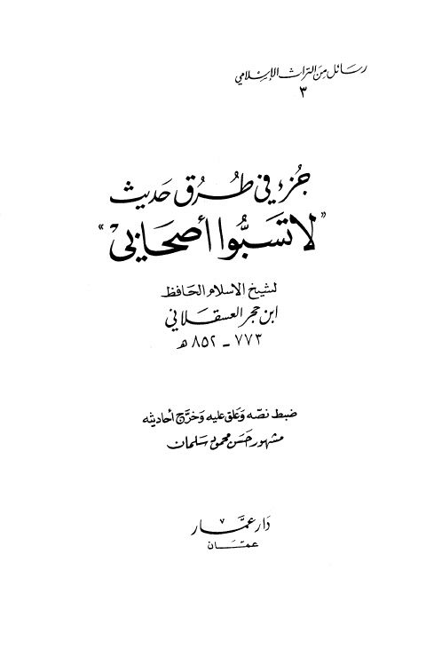

Downloads need an internet connection.
جزء في طرق حديث لا تسبوا أصحابي
Authors: أحمد بن علي بن حجر العسقلاني
Editors: مشهور بن حسن آل سلمان
Publishers: دار عمار
**▫️ العنوان: جزء في طرق حديث لا تسبوا أصحابي** ▪️ المؤلف: #أحمد_بن_علي_بن_حجر_العسقلاني ▫️ المحقق: #مشهور_بن_حسن_آل_سلمان ▪️ الناشر: #دار_عمار ▫️ تاريخ النشر: 1408هـ 1988م ▪️ بلد النشر: عمار، #الأردن ▫️ الطبعة: 1 ▪️ عدد الأجزاء: 1 ▫️ الصفحات: 96 ▪️ نوع الوعاء: #كتاب ▫️ التصنيف الرئيسي: #الحديث_وعلومه ▪️ التصنيف الفرعي: #باقي_مجموعات_الحديث ۪